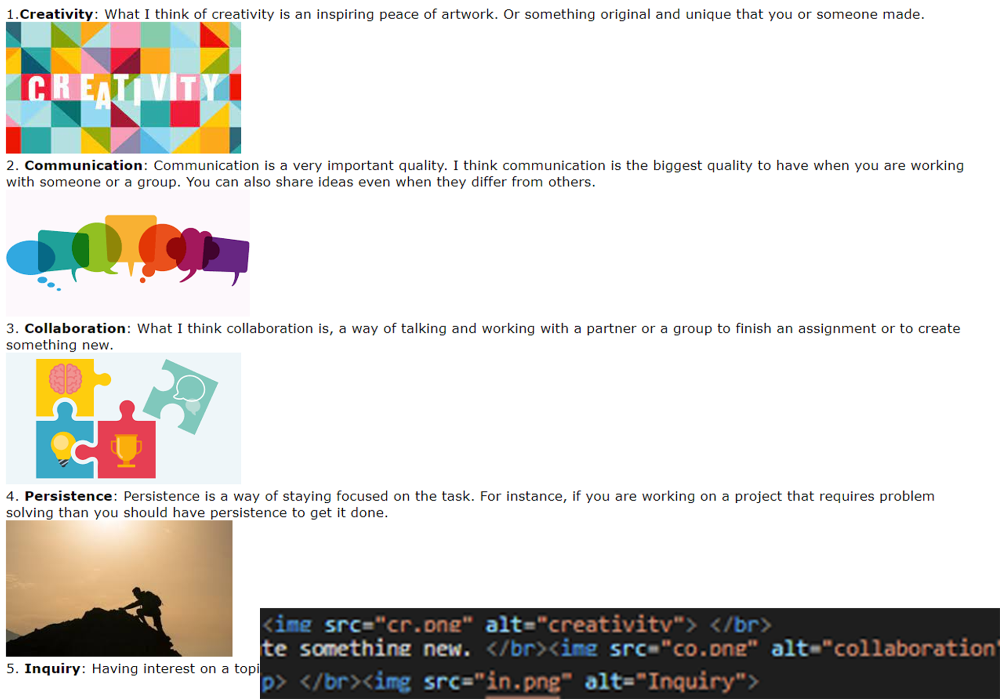
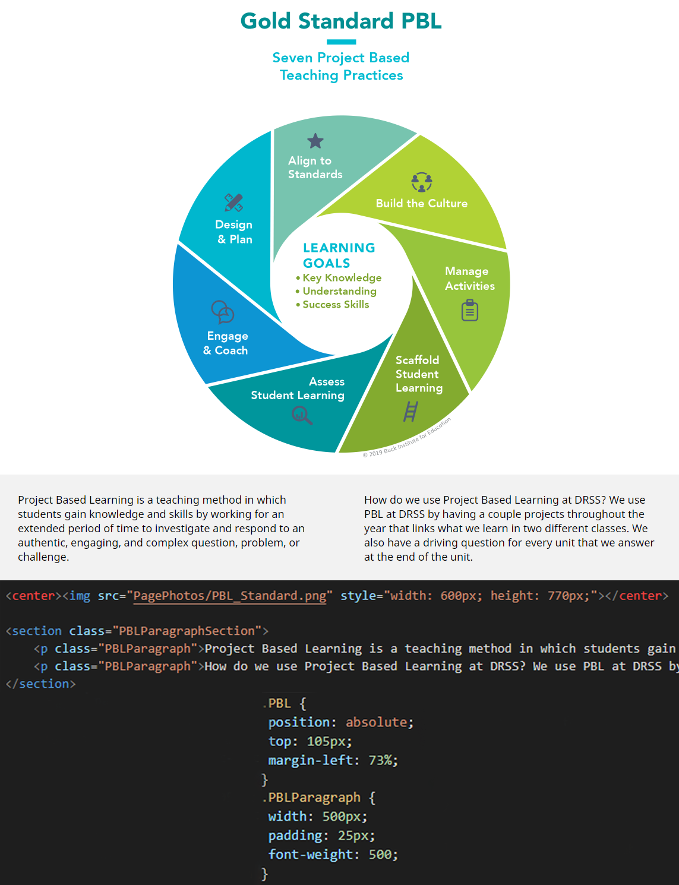

8th Grade Growth
How I've grown in the 8th Grade.
How I've grown in the 8th Grade.
In 7th grade I would use basic HTML and CSS code. For instance I would use basic absolute position and use default font.
This image shows my lack of coding experience. This shows my lack of organized code, theres no section tag. I also didn't style or even position the text or image.
I also had a lack of experience of how I should make a website look. I didn't pay attention to spacing or the way things are positioned. Neither did I think rounding things off or creating different color sections was important.
Now, I would critque this page by saying, add some spacing, maybe round off the corners of the images, try to add different colored sections and experiment with fonts.
My growth was the complexity of my code. I've learned many coding skills from 7th grade to 8th grade.
In 8th grade, instead of using basic HTML and CSS code, I now am able to use more complex code. I'm now able to use margins and padding to more efficently postion items, I use multiple professional, I also use javascript.
This image shows my coding progression. You can see that at the bottom of the first image I added a box with a different color thats positioned in the center of the page. The image is also center and is transparent.
In the second image, you see that I styled the image and used section tags and classes unstead of divs that make my code look messy.
In the last image, you can see that I used not only absolute positioning but also padding a margin to change the spacing of the content on the page.